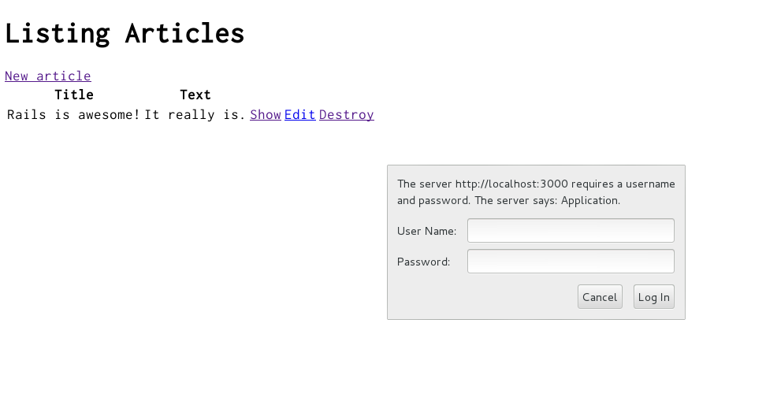

1 指導假設
本指南專為想要開始建立 Rails 的初學者而設計 從頭開始申請。它並不假設您有任何先前的經驗 與導軌。
Rails 是一個執行在Ruby 程式語言上的 Web 應用程式框架。 如果您之前沒有使用Ruby 的經驗，您會發現學習非常陡峭 曲線直接跳入 Rails。有幾個精選的線上資源列表 學習Ruby：
請注意，一些資源雖然仍然很好，但涵蓋了舊版本的 Ruby，並且可能不包含您在日常中會看到的某些語法 用 Rails 開發。
2 什麼是 Rails？
Rails 是用Ruby 程式語言編寫的Web 應用程式開發框架。 它旨在透過假設使 Web 應用程式程式設計更容易 關於每個開發人員需要什麼才能開始。它可以讓你寫得更少 程式碼，同時完成比許多其他語言和框架更多的工作。 經驗豐富的 Rails 開發人員也報告說它使 Web 應用程式 開發更有趣。
Rails 是固執己見的軟體。它假設有一個“最好的” 做事的方式，它旨在鼓勵這種方式 - 在某些情況下 勸阻替代品。如果你學習了“The Rails Way”，你可能會發現 生產力的巨大提升。如果你堅持把舊習慣從 其他語言到您的 Rails 開發，並嘗試使用您的模式 在別處學到的，你可能會有不那麼愉快的經歷。
Rails 哲學包括兩個主要的指導原則：
- 不要重複自己： DRY 是軟體開發的一個原則 指出“每一條知識都必須有一個單一的、明確的、權威的 系統內的表示”。不要一遍又一遍地寫相同的資訊 同樣，我們的程式碼更易於維護、更可擴充套件且錯誤更少。
- Convention Over Configuration： Rails 有很多關於最好的方法的意見 Web 應用程式中的事物，並且預設為這組約定，而不是 要求您透過無盡的配置檔案指定細節。
3 建立一個新的 Rails 專案
閱讀本指南的最佳方式是循序漸進。所有步驟都是 執行此示例應用程式必不可少，無需額外的程式碼或步驟 需要。
透過遵循本指南，您將建立一個名為的 Rails 專案
blog，一個（非常）簡單的部落格。在開始構建應用程式之前，
你需要確保你已經安裝了 Rails 本身。
注意：下面的示例使用 $ 來表示類 UNIX 作業系統中的終端提示，
儘管它可能已被定製為不同的外觀。如果您使用的是 Windows，
您的提示看起來像C:\source_code>。
3.1 安裝 Rails
在安裝 Rails 之前，您應該檢查以確保您的系統具有 安裝了適當的先決條件。這些包括：
- Ruby
- SQLite3
- Node.js
- 紗線
3.1.1 安裝 Ruby
開啟命令列提示符。在 macOS 上開啟 Terminal.app；在 Windows 上選擇
從開始選單中“執行”並輸入cmd.exe。任何以 a 開頭的命令
美元符號$ 應該在命令列中執行。驗證您是否有
已安裝 Ruby 的當前版本：
$ ruby --version
ruby 2.7.0
Rails 需要Ruby 2.7.0 或更高版本。最好使用最新的Ruby 版本。 如果返回的版本號小於該數字（例如 2.3.7 或 1.8.7）， 您需要安裝Ruby 的全新副本。
要在 Windows 上安裝 Rails，您首先需要安裝 Ruby 安裝程式。
有關大多數作業系統的更多安裝方法，請檢視 ruby-lang.org。
3.1.2 安裝 SQLite3
您還需要安裝 SQLite3 資料庫。 許多流行的類 UNIX 作業系統都附帶了可接受的 SQLite3 版本。 其他人可以在 SQLite3 網站 上找到安裝說明。
驗證它是否已正確安裝並在您的負載PATH 中：
$ sqlite3 --version
程式應該報告它的版本。
3.1.3 安裝 Node.js 和 Yarn
最後，您需要安裝 Node.js 和 Yarn 來管理應用程式的 JavaScript。
在 Node.js 網站 上找到安裝說明，然後 使用以下命令驗證它是否正確安裝：
$ node --version
你的 Node.js 執行時的版本應該被打印出來。確保它更大 比 8.16.0。
要安裝 Yarn，請按照安裝步驟操作 Yarn 網站 上的說明。
執行此命令應打印出 Yarn 版本：
$ yarn --version
如果顯示“1.22.0”之類的內容，則表示 Yarn 已正確安裝。
3.1.4 安裝 Rails
要安裝 Rails，請使用 RubyGems 提供的 gem install 命令：
$ gem install rails
要驗證您是否正確安裝了所有內容，您應該能夠 在新終端中執行以下命令：
$ rails --version
如果它顯示類似“Rails 7.0.0”的內容，您就可以繼續了。
3.2 建立部落格應用程式
Rails 附帶了許多稱為生成器的指令碼，這些指令碼旨在使 透過建立開始所需的一切，您的開發生活更輕鬆 從事特定的任務。其中之一是新的應用程式生成器， 這將為您提供新的 Rails 應用程式的基礎，以便 你不必自己寫。
要使用此生成器，請開啟終端，導航到您擁有的目錄 建立檔案和執行的許可權：
$ rails new blog
這將在 blog 目錄中建立一個名為 Blog 的 Rails 應用程式和
安裝 Gemfile 中已經提到的 gem 依賴項使用
bundle install。
提示：您可以看到 Rails 應用程式的所有命令列選項
生成器透過執行rails new --help 來接受。
建立部落格應用程式後，切換到其資料夾：
$ cd blog
blog 目錄將有許多生成的檔案和資料夾，它們使
Rails 應用程式的結構。本教程中的大部分工作將
發生在app 資料夾中，但這裡有每個功能的基本概述
Rails 預設建立的檔案和資料夾：
| 檔案/資料夾 | 目的 |
|---|---|
| app/ | 包含應用程式的controllers、models、views、helpers、郵件程式、渠道、作業和資產。在本指南的其餘部分，您將重點關注此資料夾。 |
| bin/ | 包含用於啟動應用程式的rails 指令碼，並且可以包含用於設定、更新、部署或執行應用程式的其他指令碼。 |
| config/ | 包含應用程式路由、資料庫等的配置。這在 配置 Rails 應用程式 中有更詳細的介紹。 |
| config.ru | 用於啟動應用程式的基於機架的伺服器的機架配置。更多關於 Rack 的資訊，請參見【Rack 網站】(https://rack.github.io/)。 |
| db/ | 包含您當前的資料庫模式，以及資料庫migrations。 |
| Gemfile Gemfile.lock |
這些檔案允許您指定 Rails 應用程式需要哪些 gem 依賴項。這些檔案由 Bundler gem 使用。有關 Bundler 的更多資訊，請參閱 Bundler 網站。 |
| lib/ | 為您的應用程式擴充套件modules。 |
| log/ | 應用程式日誌檔案。 |
| public/ | 包含靜態檔案和編譯資產。當您的應用程式執行時，此目錄將按原樣公開。 |
| Rakefile | 該檔案定位並載入可以從命令列執行的任務。任務定義在 Rails 的整個元件中都有定義。您應該透過將檔案新增到應用程式的lib/tasks 目錄來新增您自己的任務，而不是更改Rakefile。 |
| README.md | 這是您的應用程式的簡要說明手冊。您應該編輯此檔案以告訴其他人您的應用程式是做什麼的，如何設定它，等等。 |
| storage/ | Active Storage 磁碟服務檔案。這在 Active Storage Overview 中有介紹。 |
| test/ | 單元測試、夾具和其他測試裝置。這些在 Testing Rails Applications 中有介紹。 |
| tmp/ | 臨時檔案（如快取和 pid 檔案）。 |
| vendor/ | 所有第三方程式碼的地方。在典型的 Rails 應用程式中，這包括供應商 gems。 |
| .gitignore | 這個檔案告訴 git 它應該忽略哪些檔案（或模式）。有關忽略檔案的更多資訊，請參閱 GitHub - 忽略檔案。 |
| .ruby-version | 此檔案包含預設的Ruby 版本。 |
4 你好，Rails！
首先，讓我們快速在螢幕上顯示一些文字。為此，您需要 讓您的 Rails 應用程式伺服器執行。
4.1 啟動 Web 伺服器
您實際上已經有了一個功能強大的 Rails 應用程式。要檢視它，您需要
在您的開發機器上啟動一個 Web 伺服器。您可以透過執行
blog 目錄中的以下命令：
$ bin/rails server
提示：如果您使用的是 Windows，則必須在 bin 下傳遞指令碼
資料夾直接到Ruby 直譯器，例如ruby bin\rails server。
提示：JavaScript 資產壓縮需要您
在你的系統上有一個可用的 JavaScript 執行時，如果沒有
在執行時，您將在資產壓縮期間看到 execjs 錯誤。
通常 macOS 和 Windows 都安裝了 JavaScript 執行時。
therubyrhino 是 JRuby 使用者推薦的執行時，由
在 JRuby 下生成的應用程式中預設為 Gemfile。你可以調查
ExecJS 上所有支援的執行時。
這將啟動 Puma，一個預設與 Rails 一起分發的 Web 伺服器。檢視 您在action 中的應用程式，開啟瀏覽器視窗並導航到 http://localhost:3000。您應該會看到 Rails 預設資訊頁面：
！[好極了！你在 Rails 上！螢幕截圖]（圖片/getting_started/rails_welcome.png）
當您想停止 Web 伺服器時，請在終端視窗中按 Ctrl+C 它正在執行。在開發環境中，Rails 一般不會 要求您重新啟動伺服器；您在檔案中所做的更改將是 由伺服器自動提取。
“耶！你在 Rails 上！”頁面是新 Rails 的 smoke test 應用程式：它確保您的軟體配置正確 足以提供一個頁面。
4.2 說“你好”，Rails
要讓 Rails 說“你好”，你至少需要建立一個 route，一個 controller 帶有 action 和 view。路由將請求對映到 controller action。 controller action 執行必要的工作來處理 請求，併為@{20} 準備任何資料。 view 以所需的方式顯示資料 格式。
在實現方面：路由是用Ruby [DSL （特定領域語言）]（https://en.wikipedia.org/wiki/Domain-specific_language）。 Controller 是Ruby 類，它們的公共方法是actions。還有views 是模板，通常以 HTML 和 Ruby 的混合形式編寫。
讓我們首先在我們的路由檔案 config/routes.rb 中新增一個路由
Rails.application.routes.draw 塊的頂部：
Rails.application.routes.draw do
get "/articles", to: "articles#index"
# For details on the DSL available within this file, see https://guides.rubyonrails.org/routing.html
end
上面的路由宣告GET /articles 請求被對映到index
action 個 ArticlesController。
要建立ArticlesController 及其index action，我們將執行controller
生成器（使用--skip-routes 選項，因為我們已經有了一個
合適的路線）：
$ bin/rails generate controller Articles index --skip-routes
Rails 會為你建立幾個檔案：
create app/controllers/articles_controller.rb
invoke erb
create app/views/articles
create app/views/articles/index.html.erb
invoke test_unit
create test/controllers/articles_controller_test.rb
invoke helper
create app/helpers/articles_helper.rb
invoke test_unit
invoke assets
invoke scss
create app/assets/stylesheets/articles.scss
其中最重要的是controller 檔案，
app/controllers/articles_controller.rb。讓我們來看看它：
class ArticlesController < ApplicationController
def index
end
end
index action 是空的。當 action 未顯式呈現 view 時
（或以其他方式觸發 HTTP 響應），Rails 將自動呈現 view
匹配controller 和action 的名稱。公約結束
配置！ View 位於app/views 目錄中。所以index
action 將預設呈現 app/views/articles/index.html.erb。
讓我們開啟app/views/articles/index.html.erb，並將其內容替換為：
<h1>Hello, Rails!</h1>
如果您之前停止了 Web 伺服器以執行 controller 生成器，
用bin/rails server 重新啟動它。現在訪問 http://localhost:3000/articles，
並看到我們顯示的文字！
4.3 設定應用首頁
目前，http://localhost:3000 仍然顯示“Yay！You're on Rails！”。 讓我們顯示我們的“你好，Rails！” http://localhost:3000 上的文字也是如此。去做 所以，我們將新增一個路由，將我們的應用程式的根路徑對映到 適當的controller 和action。
我們開啟config/routes.rb，在頂部新增如下root路由
Rails.application.routes.draw 塊：
Rails.application.routes.draw do
root "articles#index"
get "/articles", to: "articles#index"
end
現在我們可以看到我們的“你好，Rails！”當我們訪問 http://localhost:3000 時的文字，
確認root 路由也對映到index action
ArticlesController。
提示：要了解有關路由的更多資訊，請參閱 [Rails Routing from the Outside In]( 路由.html）。
5 MVC 和你
到目前為止，我們已經討論了路由controllers、actions 和views。所有這些 是遵循 MVC (Model-View-Controller) 模式。 MVC 是一種設計模式，它將應用程式的職責劃分為 使其更容易推理。 Rails 按照慣例遵循這種設計模式。
由於我們有一個controller 和一個view 可以使用，讓我們生成下一個 件：model。
5.1 生成 Model
model 是一個Ruby 類，用於表示資料。此外，models 可以透過 Rails 的一項功能與應用程式的資料庫進行互動，稱為 Active Record。
要定義model，我們將使用model 生成器：
$ bin/rails generate model Article title:string body:text
注意：Model 名稱是 singular，因為例項化的模型代表
單個數據記錄。為了幫助記住這個約定，想想你會如何
呼叫model 的建構函式：我們要寫Article.new(...)，不是
Articles.new(...)。
這將建立幾個檔案：
invoke active_record
create db/migrate/<timestamp>_create_articles.rb
create app/models/article.rb
invoke test_unit
create test/models/article_test.rb
create test/fixtures/articles.yml
我們將關注的兩個檔案是migration 檔案
(db/migrate/<timestamp>_create_articles.rb) 和 model 檔案
(app/models/article.rb)。
5.2 資料庫 Migrations
Migrations 用於更改應用程式資料庫的結構。在 Rails 應用程式，migrations 是用Ruby 編寫的，因此它們可以 與資料庫無關。
讓我們來看看我們新的migration 檔案的內容：
class CreateArticles < ActiveRecord::Migration[7.0]
def change
create_table :articles do |t|
t.string :title
t.text :body
t.timestamps
end
end
end
對create_table 的呼叫指定了articles 表應該如何
建。預設情況下，create_table 方法新增一個id 列作為
自動遞增主key。所以表中的第一條記錄會有一個
@{0} 為 1，下一條記錄的 @{0} 為 2，依此類推。
在create_table 的塊內，定義了兩列：title 和
body。這些是由生成器新增的，因為我們將它們包含在我們的
生成命令 (bin/rails generate model Article title:string body:text)。
塊的最後一行是對t.timestamps 的呼叫。該方法定義
名為created_at 和updated_at 的另外兩個列。正如我們將看到的，
Rails 會為我們管理這些，當我們建立或更新一個
model 物件。
讓我們使用以下命令執行我們的 migration：
$ bin/rails db:migrate
該命令將顯示指示表已建立的輸出：
== CreateArticles: migrating ===================================
-- create_table(:articles)
-> 0.0018s
== CreateArticles: migrated (0.0018s) ==========================
提示：要了解有關遷移的更多資訊，請參閱 [Active Record Migrations]( active_record_migrations.html）。
現在我們可以使用model 與表進行互動。
5.3 使用Model 與資料庫互動
為了稍微使用我們的model，我們將使用 Rails 的一個特性，稱為
安慰。控制檯是一個和irb 一樣的互動式編碼環境，但是
它還會自動載入 Rails 和我們的應用程式程式碼。
讓我們用這個命令啟動控制檯：
$ bin/rails console
您應該會看到一個irb 提示，例如：
Loading development environment (Rails 7.0.0)
irb(main):001:0>
在這個提示下，我們可以初始化一個新的Article 物件：
irb> article = Article.new(title: "Hello Rails", body: "I am on Rails!")
重要的是要注意我們只初始化了這個物件。這個物件
根本沒有儲存到資料庫中。它僅在控制檯中可用
片刻。要將物件儲存到資料庫，我們必須呼叫 save：
irb> article.save
(0.1ms) begin transaction
Article Create (0.4ms) INSERT INTO "articles" ("title", "body", "created_at", "updated_at") VALUES (?, ?, ?, ?) [["title", "Hello Rails"], ["body", "I am on Rails!"], ["created_at", "2020-01-18 23:47:30.734416"], ["updated_at", "2020-01-18 23:47:30.734416"]]
(0.9ms) commit transaction
=> true
上面的輸出顯示了一個INSERT INTO "articles" ... 資料庫查詢。這個
表示文章已插入到我們的表中。如果我們採取
再次檢視article 物件，我們看到發生了一些有趣的事情：
irb> article
=> #<Article id: 1, title: "Hello Rails", body: "I am on Rails!", created_at: "2020-01-18 23:47:30", updated_at: "2020-01-18 23:47:30">
現在設定了物件的id、created_at 和updated_at 屬性。
當我們儲存物件時，Rails 為我們做了這件事。
當我們想從資料庫中獲取這篇文章時，我們可以呼叫 find
在 model 上並將 id 作為引數傳遞：
irb> Article.find(1)
=> #<Article id: 1, title: "Hello Rails", body: "I am on Rails!", created_at: "2020-01-18 23:47:30", updated_at: "2020-01-18 23:47:30">
當我們想從資料庫中獲取所有文章時，我們可以呼叫 all
在model 上：
irb> Article.all
=> #<ActiveRecord::Relation [#<Article id: 1, title: "Hello Rails", body: "I am on Rails!", created_at: "2020-01-18 23:47:30", updated_at: "2020-01-18 23:47:30">]>
此方法返回 ActiveRecord::Relation 物件，其中
您可以將其視為超強陣列。
提示：要了解有關models 的更多資訊，請參閱 Active Record 基礎知識 和 [Active Record 查詢介面]( active_record_querying.html）。
Models 是 MVC 難題的最後一部分。接下來，我們將連線所有 拼湊在一起。
5.4 顯示文章列表
讓我們回到app/controllers/articles_controller.rb 中的controller，然後
更改 index action 以從資料庫中獲取所有文章：
class ArticlesController < ApplicationController
def index
@articles = Article.all
end
end
Controller 例項變數可以透過view 訪問。這意味著我們可以
在app/views/articles/index.html.erb 中引用@articles。讓我們開啟那個
檔案，並將其內容替換為：
<h1>Articles</h1>
<ul>
<% @articles.each do |article| %>
<li>
<%= article.title %>
</li>
<% end %>
</ul>
上面的程式碼是 HTML 和 ERB 的混合體。 ERB 是一個模板系統
計算嵌入在文件中的Ruby 程式碼。在這裡，我們可以看到兩種型別的 ERB
標籤：@{_0} 和<%= %>。 @{_0} 標籤的意思是“評估封閉的Ruby
程式碼。”<%= %> 標籤的意思是“評估封閉的Ruby 程式碼，並輸出
value 它返回。”您可以在常規 Ruby 程式中編寫的任何內容都可以
在這些 ERB 標籤內，雖然通常最好保留 ERB 標籤的內容
簡而言之，為了可讀性。
由於我們不想輸出@articles.each 返回的value，我們已經
將該程式碼包含在<% %> 中。但是，因為我們確實想要輸出value
由article.title 返回（對於每篇文章），我們將該程式碼包含在
<%= %>。
我們可以透過訪問 http://localhost:3000 來檢視最終結果。 （記住
bin/rails server 必須正在執行！）當我們這樣做時會發生以下情況：
- 瀏覽器發出請求：
GET http://localhost:3000。 - 我們的 Rails 應用程式接收到這個請求。
- Rails 路由器將根路由對映到
ArticlesController的indexaction。 -
indexaction 使用Articlemodel 來獲取資料庫中的所有文章。 - Rails 自動呈現
app/views/articles/index.html.erbview。 - 對view 中的ERB 程式碼進行評估以輸出HTML。
- 伺服器將包含 HTML 的響應傳送回瀏覽器。
我們已經將所有 MVC 部分連線在一起，我們有了我們的第一個 controller action！接下來，我們將繼續討論第二個action。
6 CRUDit CRUDit 到期的地方
幾乎所有的 Web 應用程式都涉及 CRUD（建立、讀取、更新和刪除） 操作。你 甚至可能會發現您的應用程式所做的大部分工作都是 CRUD。導軌 承認這一點，並提供許多功能來幫助簡化執行 CRUD 的程式碼。
讓我們透過新增更多功能開始探索這些功能 應用。
6.1 顯示單篇文章
我們目前有一個view 列出了我們資料庫中的所有文章。讓我們新增一個 new view 顯示單篇文章的標題和正文。
我們首先新增一條對映到新controlleraction（我們
接下來會補充）。開啟config/routes.rb，並插入此處顯示的最後一條路線：
Rails.application.routes.draw do
root "articles#index"
get "/articles", to: "articles#index"
get "/articles/:id", to: "articles#show"
end
新路由是另一個 get 路由，但它的路徑中有一些額外的東西：
:id。這指定了一個路由引數。路由引數捕獲一個段
請求的路徑，並將value 放入params 雜湊，即
可以透過controller action 訪問。例如，當處理像這樣的請求時
GET http://localhost:3000/articles/1, 1 將被捕獲為 value
:id，然後可以在 show action 的 show 中作為 params[:id] 訪問
ArticlesController。
現在讓我們在 index action 下方新增show action
app/controllers/articles_controller.rb：
class ArticlesController < ApplicationController
def index
@articles = Article.all
end
def show
@article = Article.find(params[:id])
end
end
show action 呼叫 Article.find （提到
以前) 與捕獲的 ID
透過路由引數。返回的文章儲存在@article
例項變數，因此它可以透過view 訪問。預設情況下，show
action 將呈現 app/views/articles/show.html.erb。
讓我們建立app/views/articles/show.html.erb，內容如下：
<h1><%= @article.title %></h1>
<p><%= @article.body %></p>
現在我們訪問http://localhost:3000/articles/1就可以看到文章了！
最後，讓我們新增一個方便的方法來訪問文章頁面。我們將連結
app/views/articles/index.html.erb 中每篇文章的標題到其頁面：
<h1>Articles</h1>
<ul>
<% @articles.each do |article| %>
<li>
<a href="/articles/<%= article.id %>">
<%= article.title %>
</a>
</li>
<% end %>
</ul>
6.2 資源豐富的路由
到目前為止，我們已經介紹了 CRUD 的“R”（讀取）。我們最終將涵蓋“C” （建立）、“U”（更新）和“D”（刪除）。正如您可能已經猜到的那樣，我們會做 因此，透過新增新路由、controller、actions 和 views。每當我們有這樣的 路由的組合，controller actions 和 views 一起工作 對實體執行 CRUD 操作，我們稱該實體為 資源。為了 例如，在我們的應用程式中，我們會說一篇文章是一種資源。
Rails 提供了一個名為 resources
對映資源集合的所有常規路線，例如
文章。因此，在我們繼續“C”、“U”和“D”部分之前，讓我們替換
config/routes.rb 中的兩條 get 路由和 resources：
Rails.application.routes.draw do
root "articles#index"
resources :articles
end
我們可以透過執行bin/rails routes 命令來檢查映射了哪些路由：
$ bin/rails routes
Prefix Verb URI Pattern Controller#Action
root GET / articles#index
articles GET /articles(.:format) articles#index
new_article GET /articles/new(.:format) articles#new
article GET /articles/:id(.:format) articles#show
POST /articles(.:format) articles#create
edit_article GET /articles/:id/edit(.:format) articles#edit
PATCH /articles/:id(.:format) articles#update
DELETE /articles/:id(.:format) articles#destroy
resources 方法還設定了我們可以使用的 URL 和路徑 helper 方法
使我們的程式碼不依賴於特定的路由配置。 values
在上面的“字首”列中加上_url 或_path 的字尾構成名稱
其中helpers。例如，article_path 助手返回
"/articles/#{article.id}" 當給出一篇文章時。我們可以用它來整理我們的
app/views/articles/index.html.erb 中的連結：
<h1>Articles</h1>
<ul>
<% @articles.each do |article| %>
<li>
<a href="<%= article_path(article) %>">
<%= article.title %>
</a>
</li>
<% end %>
</ul>
但是，我們將透過使用 link_to
helper。 link_to helper 呈現一個連結，其第一個引數作為
連結的文字及其第二個引數作為連結的目的地。如果我們透過一個
model 物件作為第二個引數，link_to 會呼叫合適的路徑
helper 將物件轉換為路徑。例如，如果我們傳遞一篇文章，
link_to 將呼叫 article_path。所以app/views/articles/index.html.erb
變成：
<h1>Articles</h1>
<ul>
<% @articles.each do |article| %>
<li>
<%= link_to article.title, article %>
</li>
<% end %>
</ul>
好的！
提示：要了解有關路由的更多資訊，請參閱 [Rails Routing from the Outside In]( 路由.html）。
6.3 建立新文章
現在我們轉到 CRUD 的“C”（建立）。通常，在 Web 應用程式中， 建立新資源是一個多步驟的過程。首先，使用者請求一個表單 填寫。然後，使用者提交表單。如果沒有錯誤，那麼 資源已建立並顯示某種確認。否則，表格 重新顯示錯誤訊息，並重復該過程。
在 Rails 應用程式中，這些步驟通常由 controller 的
new 和 create actions。讓我們新增這些actions 的典型實現
到app/controllers/articles_controller.rb，在show action 下方：
class ArticlesController < ApplicationController
def index
@articles = Article.all
end
def show
@article = Article.find(params[:id])
end
def new
@article = Article.new
end
def create
@article = Article.new(title: "...", body: "...")
if @article.save
redirect_to @article
else
render :new, status: :unprocessable_entity
end
end
end
new action 例項化一個新文章，但不儲存它。本文
將在構建表單時在view 中使用。預設情況下，new action
將渲染app/views/articles/new.html.erb，我們接下來將建立它。
create action 以values 作為標題和
身體，並試圖挽救它。如果文章儲存成功，action
將瀏覽器重定向到"http://localhost:3000/articles/#{@article.id}" 處的文章頁面。
否則，action 透過渲染 app/views/articles/new.html.erb 重新顯示錶單
使用狀態程式碼 4XX 使應用程式與 Turbo 一起正常工作。
這裡的標題和正文是虛擬的values。在我們建立好表格之後，我們會來
返回並更改這些。
注意：redirect_to
將導致瀏覽器發出新請求，
而 render
為當前請求呈現指定的 view。
在改變資料庫或應用程式狀態後使用redirect_to 很重要。
否則，如果使用者重新整理頁面，瀏覽器會發出相同的請求，並且會重複修改。
6.3.1 使用表單構建器
我們將使用 Rails 的一個稱為表單構建器的功能來建立我們的表單。使用 一個表單構建器，我們可以編寫最少的程式碼來輸出一個表單 完全配置並遵循 Rails 約定。
讓我們用以下內容建立app/views/articles/new.html.erb：
<h1>New Article</h1>
<%= form_with model: @article do |form| %>
<div>
<%= form.label :title %><br>
<%= form.text_field :title %>
</div>
<div>
<%= form.label :body %><br>
<%= form.text_area :body %>
</div>
<div>
<%= form.submit %>
</div>
<% end %>
form_with
helper 方法例項化一個表單構建器。在form_with 塊中我們呼叫
label 等方法
和 text_field
在表單構建器上輸出適當的表單元素。
我們form_with 呼叫的結果輸出將如下所示：
<form action="/articles" accept-charset="UTF-8" method="post">
<input type="hidden" name="authenticity_token" value="...">
<div>
<label for="article_title">Title</label><br>
<input type="text" name="article[title]" id="article_title">
</div>
<div>
<label for="article_body">Body</label><br>
<textarea name="article[body]" id="article_body"></textarea>
</div>
<div>
<input type="submit" name="commit" value="Create Article" data-disable-with="Create Article">
</div>
</form>
提示：要了解有關表單構建器的更多資訊，請參閱 [Action View 表單 Helpers]( form_helpers.html）。
6.3.2 使用強引數
提交的表單資料被放入params 雜湊，與捕獲的路由一起
引數。因此，create action 可以透過以下方式訪問提交的標題
params[:article][:title] 和透過params[:article][:body] 提交的正文。
我們可以將這些values 單獨傳遞給Article.new，但這將是
冗長且可能容易出錯。隨著我們新增更多，情況會變得更糟
領域。
相反，我們將傳遞一個包含values 的雜湊。然而，我們必須
仍然指定該雜湊中允許使用的values。否則，惡意使用者
可能會提交額外的表單欄位並覆蓋私人資料。實際上，
如果我們將未經過濾的params[:article] Hash 直接傳遞給Article.new，
Rails 會丟擲一個ForbiddenAttributesError 來提醒我們這個問題。
所以我們將使用 Rails 的一個名為 Strong Parameters 的特性來過濾 params。
將其視為 強型別
對於params。
讓我們在app/controllers/articles_controller.rb 的底部新增一個私有方法
名為article_params 的過濾器params。讓我們改變create 來使用
它：
class ArticlesController < ApplicationController
def index
@articles = Article.all
end
def show
@article = Article.find(params[:id])
end
def new
@article = Article.new
end
def create
@article = Article.new(article_params)
if @article.save
redirect_to @article
else
render :new, status: :unprocessable_entity
end
end
private
def article_params
params.require(:article).permit(:title, :body)
end
end
提示：要了解有關強引數的更多資訊，請參閱 Action Controller Overview § 強引數。
6.3.3 驗證和顯示錯誤訊息
正如我們所見，建立資源是一個多步驟的過程。處理無效
使用者輸入是該過程的另一個步驟。 Rails 提供了一個名為
validations 幫助我們處理無效的使用者輸入。驗證是規則
在儲存model 物件之前進行檢查。如果任何檢查失敗，
儲存將被中止，並且適當的錯誤訊息將新增到
model 物件的 errors 屬性。
讓我們為app/models/article.rb 中的model 新增一些驗證：
class Article < ApplicationRecord
validates :title, presence: true
validates :body, presence: true, length: { minimum: 10 }
end
第一個驗證宣告 title value 必須存在。因為
@{_0} 是一個字串，這意味著@{_0} value 必須至少包含一個
非空白字元。
第二個驗證宣告 body value 也必須存在。
此外，它還宣告body value 必須至少為 10 個字元
長。
注意：您可能想知道title 和body 屬性是在哪裡定義的。
Active Record 自動為每個表列定義 model 屬性，所以
您不必在 model 檔案中宣告這些屬性。
驗證到位後，讓我們將 app/views/articles/new.html.erb 修改為
顯示title 和body 的任何錯誤訊息：
<h1>New Article</h1>
<%= form_with model: @article do |form| %>
<div>
<%= form.label :title %><br>
<%= form.text_field :title %>
<% @article.errors.full_messages_for(:title).each do |message| %>
<div><%= message %></div>
<% end %>
</div>
<div>
<%= form.label :body %><br>
<%= form.text_area :body %><br>
<% @article.errors.full_messages_for(:body).each do |message| %>
<div><%= message %></div>
<% end %>
</div>
<div>
<%= form.submit %>
</div>
<% end %>
full_messages_for
方法返回指定的使用者友好的錯誤訊息陣列
屬性。如果該屬性沒有錯誤，則陣列將為空。
要了解所有這些是如何協同工作的，讓我們再看看
new 和create controller actions：
def new
@article = Article.new
end
def create
@article = Article.new(article_params)
if @article.save
redirect_to @article
else
render :new, status: :unprocessable_entity
end
end
當我們訪問 http://localhost:3000/articles/new 時，GET /articles/new
請求被對映到@{_0} action。 @{_0} action 不會嘗試儲存
@article。因此，不檢查驗證，不會有錯誤
訊息。
當我們提交表單時，POST /articles 請求被對映到create
action。 create action 確實 嘗試儲存@article。所以，
驗證已檢查。如果任何驗證失敗，@article 將不會被
已儲存，app/views/articles/new.html.erb 將呈現錯誤
帶有狀態程式碼 4XX 的訊息，應用程式可以正常使用 Turbo。
提示：要了解有關驗證的更多資訊，請參閱 [Active Record 驗證]( active_record_validations.html）。要了解有關驗證錯誤訊息的更多資訊， 請參閱 [Active Record 驗證 § 處理驗證錯誤]( active_record_validations.html#working-with-validation-errors）。
6.3.4 收尾
我們現在可以透過訪問 http://localhost:3000/articles/new 建立一篇文章。
最後，讓我們從底部連結到該頁面
app/views/articles/index.html.erb：
<h1>Articles</h1>
<ul>
<% @articles.each do |article| %>
<li>
<%= link_to article.title, article %>
</li>
<% end %>
</ul>
<%= link_to "New Article", new_article_path %>
6.4 更新文章
我們已經介紹了 CRUD 的“CR”。現在讓我們繼續討論“U”（更新）。更新中 資源與建立資源非常相似。它們都是多步驟的 過程。首先，使用者請求一個表單來編輯資料。然後，使用者 提交表單。如果沒有錯誤，則更新資源。別的， 表單將重新顯示錯誤訊息，並重復該過程。
這些步驟通常由controller 的edit 和update 處理
actions。讓我們將這些actions 的典型實現新增到
app/controllers/articles_controller.rb，在create action 下方：
class ArticlesController < ApplicationController
def index
@articles = Article.all
end
def show
@article = Article.find(params[:id])
end
def new
@article = Article.new
end
def create
@article = Article.new(article_params)
if @article.save
redirect_to @article
else
render :new, status: :unprocessable_entity
end
end
def edit
@article = Article.find(params[:id])
end
def update
@article = Article.find(params[:id])
if @article.update(article_params)
redirect_to @article
else
render :edit, status: :unprocessable_entity
end
end
private
def article_params
params.require(:article).permit(:title, :body)
end
end
注意edit 和update actions 與new 和create 的相似之處
actions。
edit action 從資料庫中獲取文章，並將其儲存在
@article 以便在構建表單時可以使用它。預設情況下，edit
action 將呈現 app/views/articles/edit.html.erb。
update action（重新）從資料庫中獲取文章，並嘗試
用article_params 過濾的提交表單資料更新它。如果不
驗證失敗，更新成功，action 重定向瀏覽器
到文章頁面。否則，action 會重新顯示有錯誤的表單
訊息，透過使用狀態程式碼 4XX 呈現 app/views/articles/edit.html.erb
使應用程式與 Turbo 一起正常工作。
6.4.1 使用 Partials 共享 View 程式碼
我們的edit 表單看起來與我們的new 表單相同。甚至程式碼將是
同樣，感謝 Rails 表單構建器和足智多謀的路由。表單生成器
自動配置表單以發出適當型別的請求，基於
關於model 物件之前是否已儲存。
因為程式碼是相同的，我們將把它分解成一個共享的
view 稱為部分。讓我們建立app/views/articles/_form.html.erb
以下內容：
<%= form_with model: article do |form| %>
<div>
<%= form.label :title %><br>
<%= form.text_field :title %>
<% article.errors.full_messages_for(:title).each do |message| %>
<div><%= message %></div>
<% end %>
</div>
<div>
<%= form.label :body %><br>
<%= form.text_area :body %><br>
<% article.errors.full_messages_for(:body).each do |message| %>
<div><%= message %></div>
<% end %>
</div>
<div>
<%= form.submit %>
</div>
<% end %>
上面的程式碼和我們app/views/articles/new.html.erb中的表單一樣，
除了所有出現的@article 都被article 替換。
由於部分是共享程式碼，因此最好不要依賴它們
由controller action 設定的特定例項變數。相反，我們將透過
文章以區域性變數作為區域性變數。
讓我們更新app/views/articles/new.html.erb 以透過 render：
<h1>New Article</h1>
<%= render "form", article: @article %>
注意：部分檔名必須以 ** 和** 下劃線為字首，例如
_form.html.erb。但是在渲染時，它被引用而沒有
下劃線，例如render "form"。
現在，讓我們建立一個非常相似的app/views/articles/edit.html.erb：
<h1>Edit Article</h1>
<%= render "form", article: @article %>
提示：要了解有關部分的更多資訊，請參閱 Rails 中的佈局和渲染 § 使用 部分。
6.4.2 收尾
我們現在可以透過訪問其編輯頁面來更新文章，例如
http://localhost:3000/articles/1/edit。最後，讓我們連結到編輯
app/views/articles/show.html.erb 底部的頁面：
<h1><%= @article.title %></h1>
<p><%= @article.body %></p>
<ul>
<li><%= link_to "Edit", edit_article_path(@article) %></li>
</ul>
6.5 刪除文章
最後，我們到達 CRUD 的“D”（刪除）。刪除資源更簡單
過程而不是建立或更新。它只需要一個路由和一個controller
action。我們足智多謀的路由 (resources :articles) 已經提供了
路由，將DELETE /articles/:id 請求對映到destroy action
ArticlesController。
那麼，讓我們在app/controllers/articles_controller.rb 中新增一個典型的destroy action，
在update action 下方：
class ArticlesController < ApplicationController
def index
@articles = Article.all
end
def show
@article = Article.find(params[:id])
end
def new
@article = Article.new
end
def create
@article = Article.new(article_params)
if @article.save
redirect_to @article
else
render :new, status: :unprocessable_entity
end
end
def edit
@article = Article.find(params[:id])
end
def update
@article = Article.find(params[:id])
if @article.update(article_params)
redirect_to @article
else
render :edit, status: :unprocessable_entity
end
end
def destroy
@article = Article.find(params[:id])
@article.destroy
redirect_to root_path
end
private
def article_params
params.require(:article).permit(:title, :body)
end
end
@{_0} action 從資料庫中獲取文章，並呼叫 @{_0} 在上面。然後，它將瀏覽器重定向到根路徑。
我們選擇重定向到根路徑，因為這是我們的主要訪問
文章點。但是，在其他情況下，您可能會選擇重定向到
例如articles_path。
現在讓我們在app/views/articles/show.html.erb 的底部新增一個連結，以便
我們可以從它自己的頁面中刪除一篇文章：
<h1><%= @article.title %></h1>
<p><%= @article.body %></p>
<ul>
<li><%= link_to "Edit", edit_article_path(@article) %></li>
<li><%= link_to "Destroy", article_path(@article),
method: :delete,
data: { confirm: "Are you sure?" } %></li>
</ul>
在上面的程式碼中，我們向link_to 傳遞了一些額外的選項。這
method: :delete 選項導致連結發出 DELETE 請求而不是
GET 請求。 data: { confirm: "Are you sure?" } 選項導致
單擊連結時出現的確認對話方塊。如果使用者取消
對話方塊，請求被中止。這兩個選項都由一個功能提供支援
Rails 稱為 Unobtrusive JavaScript (UJS)。 JavaScript 檔案
實現這些行為預設包含在新的 Rails 應用程式中。
提示：要了解有關 Unobtrusive JavaScript 的更多資訊，請參閱 Working With JavaScript in Rails。
就是這樣！我們現在可以列出、顯示、建立、更新和刪除文章！ 不可CRUDable！
7 新增第二個Model
是時候嚮應用程式新增第二個 model 了。第二個model 將處理 對文章的評論。
7.1 生成 Model
我們將看到與之前建立時使用的相同的生成器
Article model。這次我們將建立一個Comment model 來儲存一個
參考一篇文章。在終端中執行此命令：
$ bin/rails generate model Comment commenter:string body:text article:references
此命令將生成四個檔案：
|檔案 |目的 | | --------------------------------------------- | -------------------------------------------------- -------------------------------------------------- -- | | db/migrate/20140120201010_create_comments.rb | Migration 在您的資料庫中建立評論表（您的姓名將包含不同的時間戳） | | app/models/comment.rb |評論模型 | |測試/models/comment_test.rb |評論模型的測試工具 | |測試/夾具/comments.yml |用於測試的示例註釋 |
首先看一下app/models/comment.rb：
class Comment < ApplicationRecord
belongs_to :article
end
這與您之前看到的Article model 非常相似。區別
是行belongs_to :article，它設定了一個Active Record association。
您將在本指南的下一部分中瞭解有關 associations 的一些知識。
bash 命令中使用的 (:references) key 字是 models 的特殊資料型別。
它會在您的資料庫表上建立一個新列，並在提供的 model 名稱後附加一個 _id
可以容納整數values。為了更好地理解，分析
執行migration 後的db/schema.rb 檔案。
除了model，Rails 還製作了一個migration 來建立 對應的資料庫表：
class CreateComments < ActiveRecord::Migration[7.0]
def change
create_table :comments do |t|
t.string :commenter
t.text :body
t.references :article, null: false, foreign_key: true
t.timestamps
end
end
end
t.references 行建立了一個名為 article_id 的整數列，一個索引
對於它，以及指向articles 的id 列的外部key 約束
桌子。繼續執行migration：
$ bin/rails db:migrate
Rails 足夠聰明，只執行尚未執行的 migrations 針對當前資料庫執行，因此在這種情況下，您將只看到：
== CreateComments: migrating =================================================
-- create_table(:comments)
-> 0.0115s
== CreateComments: migrated (0.0119s) ========================================
7.2 關聯 Model
Active Record associations 讓你輕鬆宣告兩個關係 models。在評論和文章的情況下，你可以寫出 這樣的關係：
- 每條評論屬於一篇文章。
- 一篇文章可以有很多評論。
實際上，這與 Rails 用於宣告 this 的語法非常接近
association。您已經看到 Comment model 中的程式碼行
(app/models/comment.rb) 使每條評論都屬於一篇文章：
class Comment < ApplicationRecord
belongs_to :article
end
您需要編輯 app/models/article.rb 以新增
association：
class Article < ApplicationRecord
has_many :comments
validates :title, presence: true
validates :body, presence: true, length: { minimum: 10 }
end
這兩個宣告啟用了一些自動行為。例如，如果
你有一個包含文章的例項變數@article，你可以檢索
屬於該文章的所有評論作為陣列使用
@article.comments。
提示：有關Active Record associations 的詳細資訊，請參閱 Active Record Associations 指南。
7.3 新增評論路由
與articles controller 一樣，我們需要新增一個路由，以便 Rails
知道我們想導航到哪裡看到comments。開啟
再次config/routes.rb 檔案，並按如下方式編輯它：
Rails.application.routes.draw do
root "articles#index"
resources :articles do
resources :comments
end
end
這將comments 建立為articles 內的巢狀資源。這是
捕獲之間存在的層次關係的另一部分
文章和評論。
提示：有關路由的更多資訊，請參閱 Rails Routing 指導。
7.4 生成 Controller
有了model，您就可以將注意力轉向建立匹配 controller。同樣，我們將使用之前使用的相同生成器：
$ bin/rails generate controller Comments
這將建立四個檔案和一個空目錄：
| 檔案/目錄 | 目的 |
|---|---|
| app/controllers/comments_controller.rb | 評論控制器 |
| 應用程式/檢視/評論/ | controller 的View 儲存在這裡 |
| 測試/controllers/comments_controller_test.rb | 控制器測試 |
| app/helpers/comments_helper.rb | 一個view 幫助檔案 |
| 應用程式/資產/樣式表/comments.scss | controller |
與任何部落格一樣，我們的讀者將在之後直接建立他們的評論
閱讀文章，一旦他們添加了評論，就會被髮回
到文章顯示頁面檢視他們現在列出的評論。正因如此，我們的
CommentsController 有沒有提供建立評論和刪除的方法
垃圾評論到達時。
首先，我們將連線文章顯示模板
(app/views/articles/show.html.erb) 讓我們發表新評論：
<h1><%= @article.title %></h1>
<p><%= @article.body %></p>
<ul>
<li><%= link_to "Edit", edit_article_path(@article) %></li>
<li><%= link_to "Destroy", article_path(@article),
method: :delete,
data: { confirm: "Are you sure?" } %></li>
</ul>
<h2>Add a comment:</h2>
<%= form_with model: [ @article, @article.comments.build ] do |form| %>
<p>
<%= form.label :commenter %><br>
<%= form.text_field :commenter %>
</p>
<p>
<%= form.label :body %><br>
<%= form.text_area :body %>
</p>
<p>
<%= form.submit %>
</p>
<% end %>
這會在 Article 顯示頁面上新增一個表單，該表單透過以下方式建立新評論
呼叫CommentsController create action。這裡的form_with 呼叫使用
一個數組，它將構建一個巢狀路由，例如/articles/1/comments。
讓我們連線app/controllers/comments_controller.rb 中的create：
class CommentsController < ApplicationController
def create
@article = Article.find(params[:article_id])
@comment = @article.comments.create(comment_params)
redirect_to article_path(@article)
end
private
def comment_params
params.require(:comment).permit(:commenter, :body)
end
end
與在controller 中所做的相比，您會在這裡看到更多的複雜性
文章。這是您設定的巢狀的副作用。每個請求
因為評論必須跟蹤評論所附的文章，
因此初始呼叫Article model 的find 方法來獲取
有問題的文章。
此外，該程式碼利用了一些可用於
association。我們在@article.comments 上使用create 方法來建立和
儲存評論。這將自動連結評論，使其屬於
那篇特定的文章。
發表新評論後，我們會將使用者傳送回原始文章
使用article_path(@article) helper。正如我們已經看到的，這呼叫
ArticlesController 的 show action 依次呈現
show.html.erb 模板。這是我們想要顯示評論的地方，所以讓我們
將其新增到app/views/articles/show.html.erb。
<h1><%= @article.title %></h1>
<p><%= @article.body %></p>
<ul>
<li><%= link_to "Edit", edit_article_path(@article) %></li>
<li><%= link_to "Destroy", article_path(@article),
method: :delete,
data: { confirm: "Are you sure?" } %></li>
</ul>
<h2>Comments</h2>
<% @article.comments.each do |comment| %>
<p>
<strong>Commenter:</strong>
<%= comment.commenter %>
</p>
<p>
<strong>Comment:</strong>
<%= comment.body %>
</p>
<% end %>
<h2>Add a comment:</h2>
<%= form_with model: [ @article, @article.comments.build ] do |form| %>
<p>
<%= form.label :commenter %><br>
<%= form.text_field :commenter %>
</p>
<p>
<%= form.label :body %><br>
<%= form.text_area :body %>
</p>
<p>
<%= form.submit %>
</p>
<% end %>
現在您可以將文章和評論新增到您的部落格，並讓它們顯示在 正確的地方。

8 重構
現在我們有文章和評論工作，看看
app/views/articles/show.html.erb 模板。它變得漫長而尷尬。我們
可以使用partials來清理它。
8.1 呈現部分集合
首先，我們將製作一個評論部分提取顯示所有評論
文章。建立檔案app/views/comments/_comment.html.erb 並將
下面進入它：
<p>
<strong>Commenter:</strong>
<%= comment.commenter %>
</p>
<p>
<strong>Comment:</strong>
<%= comment.body %>
</p>
然後你可以改變app/views/articles/show.html.erb 看起來像
下列的：
<h1><%= @article.title %></h1>
<p><%= @article.body %></p>
<ul>
<li><%= link_to "Edit", edit_article_path(@article) %></li>
<li><%= link_to "Destroy", article_path(@article),
method: :delete,
data: { confirm: "Are you sure?" } %></li>
</ul>
<h2>Comments</h2>
<%= render @article.comments %>
<h2>Add a comment:</h2>
<%= form_with model: [ @article, @article.comments.build ] do |form| %>
<p>
<%= form.label :commenter %><br>
<%= form.text_field :commenter %>
</p>
<p>
<%= form.label :body %><br>
<%= form.text_area :body %>
</p>
<p>
<%= form.submit %>
</p>
<% end %>
這現在將在app/views/comments/_comment.html.erb 中呈現部分一次
對於@article.comments 集合中的每條評論。作為render
方法迭代@article.comments 集合，它分配每個
對與部分名稱相同的區域性變數進行註釋，在這種情況下
comment，然後在partial中可用，供我們展示。
8.2 呈現部分表單
讓我們也將新的評論部分移到它自己的部分。又是你
建立一個檔案app/views/comments/_form.html.erb，其中包含：
<%= form_with model: [ @article, @article.comments.build ] do |form| %>
<p>
<%= form.label :commenter %><br>
<%= form.text_field :commenter %>
</p>
<p>
<%= form.label :body %><br>
<%= form.text_area :body %>
</p>
<p>
<%= form.submit %>
</p>
<% end %>
然後你讓app/views/articles/show.html.erb 看起來像下面這樣：
<h1><%= @article.title %></h1>
<p><%= @article.body %></p>
<ul>
<li><%= link_to "Edit", edit_article_path(@article) %></li>
<li><%= link_to "Destroy", article_path(@article),
method: :delete,
data: { confirm: "Are you sure?" } %></li>
</ul>
<h2>Comments</h2>
<%= render @article.comments %>
<h2>Add a comment:</h2>
<%= render 'comments/form' %>
第二個渲染只是定義了我們要渲染的部分模板，
comments/form。 Rails 足夠聰明，可以發現其中的正斜槓
字串並意識到您要在其中呈現_form.html.erb 檔案
app/views/comments 目錄。
@article 物件可用於 view 中呈現的任何部分，因為
我們將其定義為例項變數。
8.3 使用顧慮
關注點是使大controllers 或models 更易於理解和管理的一種方式。當多個models（或controllers）共享相同的關注點時，這也具有可重用性的優勢。關注點是使用modules 實現的，modules 包含表示模型或控制器負責的功能的明確定義部分的方法。在其他語言中，modules 通常被稱為 mixin。
您可以像使用任何module 一樣在controller 或model 中使用關注點。當您第一次使用rails new blog 建立您的應用程式時，在app/ 中建立了兩個資料夾以及其他資料夾：
app/controllers/concerns
app/models/concerns
給定的部落格文章可能有多種狀態 - 例如，它可能對所有人可見（即public），或僅對作者可見（即private）。它也可能對所有人隱藏但仍然可以檢索（即archived）。評論可以類似地隱藏或可見。這可以使用每個model 中的status 列來表示。
在article model 中，執行migration 以新增status 列後，您可以新增：
class Article < ApplicationRecord
has_many :comments
validates :title, presence: true
validates :body, presence: true, length: { minimum: 10 }
VALID_STATUSES = ['public', 'private', 'archived']
validates :status, inclusion: { in: VALID_STATUSES }
def archived?
status == 'archived'
end
end
並在Comment model 中：
class Comment < ApplicationRecord
belongs_to :article
VALID_STATUSES = ['public', 'private', 'archived']
validates :status, inclusion: { in: VALID_STATUSES }
def archived?
status == 'archived'
end
end
然後，在我們的 index action 模板 (app/views/articles/index.html.erb) 中，我們將使用 archived? 方法來避免顯示任何已歸檔的文章：
<h1>Articles</h1>
<ul>
<% @articles.each do |article| %>
<% unless article.archived? %>
<li>
<%= link_to article.title, article %>
</li>
<% end %>
<% end %>
</ul>
<%= link_to "New Article", new_article_path %>
類似地，在我們的評論部分 view (app/views/comments/_comment.html.erb) 中，我們將使用 archived? 方法來避免顯示任何已存檔的評論：
<% unless comment.archived? %>
<p>
<strong>Commenter:</strong>
<%= comment.commenter %>
</p>
<p>
<strong>Comment:</strong>
<%= comment.body %>
</p>
<% end %>
但是，如果您現在再次檢視我們的models，您會發現邏輯是重複的。如果將來我們增加部落格的功能 - 例如，包括私人訊息 - 我們可能會發現自己再次複製邏輯。這就是擔憂派上用場的地方。
一個關注點只負責模型職責的一個集中子集；我們關注的方法都將與模型的可見性相關。讓我們稱我們的新關注點 (module) Visible。我們可以在 app/models/concerns 中建立一個名為 visible.rb 的新檔案，並存儲在 models 中複製的所有狀態方法。
app/models/concerns/visible.rb
module Visible
def archived?
status == 'archived'
end
end
我們可以將狀態驗證新增到關注點中，但這稍微複雜一些，因為驗證是在類級別呼叫的方法。 ActiveSupport::Concern（API 指南）為我們提供了一種更簡單的方法來包含它們：
module Visible
extend ActiveSupport::Concern
VALID_STATUSES = ['public', 'private', 'archived']
included do
validates :status, inclusion: { in: VALID_STATUSES }
end
def archived?
status == 'archived'
end
end
現在，我們可以從每個 model 中刪除重複的邏輯，而是包含我們新的 Visible module：
在app/models/article.rb 中：
class Article < ApplicationRecord
include Visible
has_many :comments
validates :title, presence: true
validates :body, presence: true, length: { minimum: 10 }
end
在app/models/comment.rb 中：
class Comment < ApplicationRecord
include Visible
belongs_to :article
end
類方法也可以新增到關注點中。如果我們想在我們的主頁上顯示公共文章或評論的數量，我們可能會向 Visible 新增一個類方法，如下所示：
module Visible
extend ActiveSupport::Concern
VALID_STATUSES = ['public', 'private', 'archived']
included do
validates :status, inclusion: { in: VALID_STATUSES }
end
class_methods do
def public_count
where(status: 'public').count
end
end
def archived?
status == 'archived'
end
end
然後在view 中，您可以像呼叫任何類方法一樣呼叫它：
<h1>Articles</h1>
Our blog has <%= Article.public_count %> articles and counting!
<ul>
<% @articles.each do |article| %>
<% unless article.archived? %>
<li>
<%= link_to article.title, article %>
</li>
<% end %>
<% end %>
</ul>
<%= link_to "New Article", new_article_path %>
在我們的應用程式新增 @{0} 列之前，還需要執行一些步驟。首先，讓我們執行以下migrations 將@{0} 新增到Articles 和Comments：
$ bin/rails generate migration AddStatusToArticles status:string
$ bin/rails generate migration AddStatusToComments status:string
提示：要了解有關遷移的更多資訊，請參閱 [Active Record Migrations]( active_record_migrations.html）。
我們還必須允許 :status key 作為強引數的一部分，在 app/controllers/articles_controller.rb 中：
private
def article_params
params.require(:article).permit(:title, :body, :status)
end
在app/controllers/comments_controller.rb 中：
private
def comment_params
params.require(:comment).permit(:commenter, :body, :status)
end
最後，我們將在表單中新增一個選擇框，讓使用者在建立新文章或發表新評論時選擇狀態。我們還可以將預設狀態指定為public。在app/views/articles/_form.html.erb 中，我們可以新增：
<div>
<%= form.label :status %><br>
<%= form.select :status, ['public', 'private', 'archived'], selected: 'public' %>
</div>
在app/views/comments/_form.html.erb 中：
<p>
<%= form.label :status %><br>
<%= form.select :status, ['public', 'private', 'archived'], selected: 'public' %>
</p>
9 刪除評論
部落格的另一個重要功能是能夠刪除垃圾評論。去做
為此，我們需要在 view 和 destroy 中實現某種連結
action 在CommentsController 中。
首先，讓我們在
app/views/comments/_comment.html.erb 部分：
<p>
<strong>Commenter:</strong>
<%= comment.commenter %>
</p>
<p>
<strong>Comment:</strong>
<%= comment.body %>
</p>
<p>
<%= link_to 'Destroy Comment', [comment.article, comment],
method: :delete,
data: { confirm: "Are you sure?" } %>
</p>
點選這個新的“銷燬評論”連結將觸發一個DELETE
/articles/:article_id/comments/:id to our CommentsController，然後可以
用它來找到我們要刪除的評論，所以讓我們新增一個destroy action
致我們的controller (app/controllers/comments_controller.rb)：
class CommentsController < ApplicationController
def create
@article = Article.find(params[:article_id])
@comment = @article.comments.create(comment_params)
redirect_to article_path(@article)
end
def destroy
@article = Article.find(params[:article_id])
@comment = @article.comments.find(params[:id])
@comment.destroy
redirect_to article_path(@article)
end
private
def comment_params
params.require(:comment).permit(:commenter, :body, :status)
end
end
destroy action 會找到我們正在看的文章，定位到評論
在@article.comments 集合中，然後將其從
資料庫並將我們傳送回該文章的節目action。
9.1 刪除關聯物件
如果你刪除一篇文章，它的相關評論也需要被刪除
刪除，否則它們只會佔用資料庫中的空間。 Rails 允許
您可以使用association 的dependent 選項來實現此目的。修改
文章model，app/models/article.rb，如下：
class Article < ApplicationRecord
include Visible
has_many :comments, dependent: :destroy
validates :title, presence: true
validates :body, presence: true, length: { minimum: 10 }
end
10 安全
10.1 基本認證
如果您要線上釋出您的部落格，任何人都可以新增、編輯和 刪除文章或刪除評論。
Rails 提供了一個 HTTP 身份驗證系統，可以很好地工作 這個情況。
在ArticlesController 中，我們需要有一種方法來阻止訪問
各種actions 如果此人未透過身份驗證。這裡我們可以使用 Rails
http_basic_authenticate_with 方法，它允許訪問請求的
action 如果該方法允許。
要使用身份驗證系統，我們在頂部指定它
app/controllers/articles_controller.rb 中的 ArticlesController。在我們的例子中，
我們希望使用者在除index 和show 之外的每個action 上進行身份驗證，
所以我們這樣寫：
class ArticlesController < ApplicationController
http_basic_authenticate_with name: "dhh", password: "secret", except: [:index, :show]
def index
@articles = Article.all
end
# snippet for brevity
我們還希望只允許經過身份驗證的使用者刪除評論，因此在
CommentsController (app/controllers/comments_controller.rb) 我們寫：
class CommentsController < ApplicationController
http_basic_authenticate_with name: "dhh", password: "secret", only: :destroy
def create
@article = Article.find(params[:article_id])
# ...
end
# snippet for brevity
現在，如果您嘗試建立新文章，您將看到一個基本的 HTTP 身份驗證挑戰：

其他身份驗證方法可用於 Rails 應用程式。兩個熱門 Rails 的身份驗證外掛是 設計 rails 引擎和 Authlogic gem， 與其他一些人一起。
10.2 其他安全注意事項
安全性，尤其是在 Web 應用程式中，是一個廣泛而詳細的領域。安全 在您的 Rails 應用程式中有更深入的介紹 Ruby on Rails 安全指南。
11 下一步是什麼？
現在您已經看到了您的第一個 Rails 應用程式，您應該可以隨意 更新它並自行試驗。
請記住，您不必在沒有幫助的情況下做所有事情。當您需要幫助時 開始使用 Rails，請隨時諮詢這些支援 資源：
- Ruby on Rails 指南
- Ruby on Rails 郵件列表
- irc.freenode.net 上的 #rubyonrails 頻道
12 配置問題
使用 Rails 的最簡單方法是將所有外部資料儲存為 UTF-8。如果 你不會，Ruby 庫和 Rails 通常能夠轉換你的原生 資料轉換為 UTF-8，但這並不總是可靠的，所以你最好 確保所有外部資料都是 UTF-8。
如果您在這方面犯了錯誤，最常見的症狀是黑色 帶有問號的菱形出現在瀏覽器中。另一種常見 症狀是出現像“ü”這樣的字元而不是“ü”。 Rails 需要一個數字 減輕這些問題的常見原因的內部步驟 自動檢測和糾正。但是，如果您有外部資料 不儲存為 UTF-8，它偶爾會導致這些型別的問題 無法被 Rails 自動檢測並糾正。
兩個非常常見的非 UTF-8 資料來源：
- 您的文字編輯器：大多數文字編輯器（如 TextMate），預設為儲存 檔案為 UTF-8。如果您的文字編輯器沒有，這可能會導致特殊的 您在模板中輸入的字元（例如 é）以顯示為菱形 瀏覽器裡面有一個問號。這也適用於您的 i18n 翻譯檔案。大多數尚未預設為 UTF-8 的編輯器（例如 某些版本的 Dreamweaver）提供了一種將預設值更改為 UTF-8 的方法。做 所以。
- 您的資料庫：Rails 預設將資料從您的資料庫轉換為 UTF-8 在邊界。但是，如果您的資料庫在內部沒有使用 UTF-8，它 可能無法儲存使用者輸入的所有字元。例如， 如果您的資料庫在內部使用 Latin-1，並且您的使用者輸入俄語， 希伯來文或日文字元，一旦進入，資料將永遠丟失 資料庫。如果可能，請使用 UTF-8 作為資料庫的內部儲存。
反饋
我們鼓勵您幫助提高本指南的質量。
如果您發現任何拼寫錯誤或事實錯誤，請貢獻。 首先，您可以閱讀我們的 文檔貢獻 部分。
您還可能會發現不完整的內容或不是最新的內容。 請務必為 main 添加任何缺失的文檔。確保檢查 Edge Guides 先驗證 如果問題已經在主分支上解決。 檢查 Ruby on Rails 指南指南 風格和慣例。
如果由於某種原因您發現需要修復但無法自行修補的內容，請 open an issue。
最後但並非最不重要的是，關於 Ruby on Rails 的任何討論 rubyonrails-docs 郵件列表 上的文檔非常受歡迎。